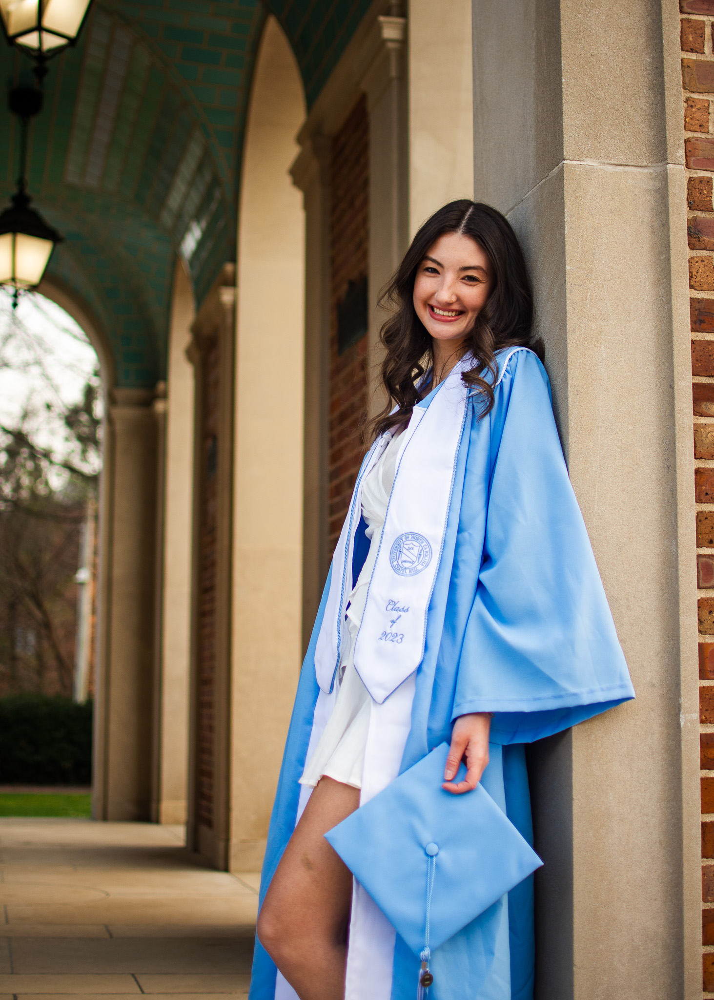

Grad Session Guide



What should I expect?
I typically start with some simple headshots and classic portraits and then more candid shots at each location. I will come prepared with a variety of poses and prompts to guide you through the session, but I also recommend looking on instagram or pinterest for inspiration. I want this experience to feel fun and relaxing, so I encourage you to be yourself and have fun with it!
What should I bring?
- Cap, Gown, Tassle & Stole (steamed if possible)
- Graduation outfit and any other outfits
- Comfortable walking shoes for in between locations
- Props or accessories you want to include in your photos
- Any other personal items: water, snacks, lip gloss, etc.
Which locations should we use for photos?
The Old Well, Bell Tower, Wilson steps, and quad area are all classic and great locations. I also love personalized locations that have a special meaning to you and your time at UNC. We can also stop in between places for unique or more nature shots. I am not super picky about how many locations we go to it's more so about how much time we have and how much walking you want to do. We can work together to plan a route that includes all the spots you want and maximizes our time together.
Can I bring friends or family to my session?
Absolutely! Having a friend or family member present can help you feel more relaxed and comfortable during the session. They can also help stand in lines for more popular locations especially as we get closer to graduation or help carry your things between locations. If you want to include them in some of the photos, that is also a great option and can make for some really special shots. Just let me know ahead of time so I can plan accordingly time wise. There is a $25 per person fee for additional people in the session which will include posing guidance, edited photos, and additional coverage time.
Outfit tips
- Solid and more neutral colors generally tend to photograph the best
- Choose outfits that make you feel confident and comfortable
- For a second outfit, a smart casual outfit a great choice
Prop Ideas
Props are such a great way to personalize your photos! Here are some ideas to get you started, but feel free to get creative and bring anything that has special meaning to you or represents your time at UNC!
- Flowers or a bouquet
- Champagne bottle or biodegradable confetti
- Books or academic items
- The Daily Tarheel
- Sports equipment or jerseys
- Pets
When and how will I get my photos?
I will do my best to return photos within a week of your session, but I am also a busy student so I appreciate your patience as I work to edit and deliver your photos in a timely manner. When your photos are ready, I will send you a link to a personalized gallery where you can view and download your high resolution photos.